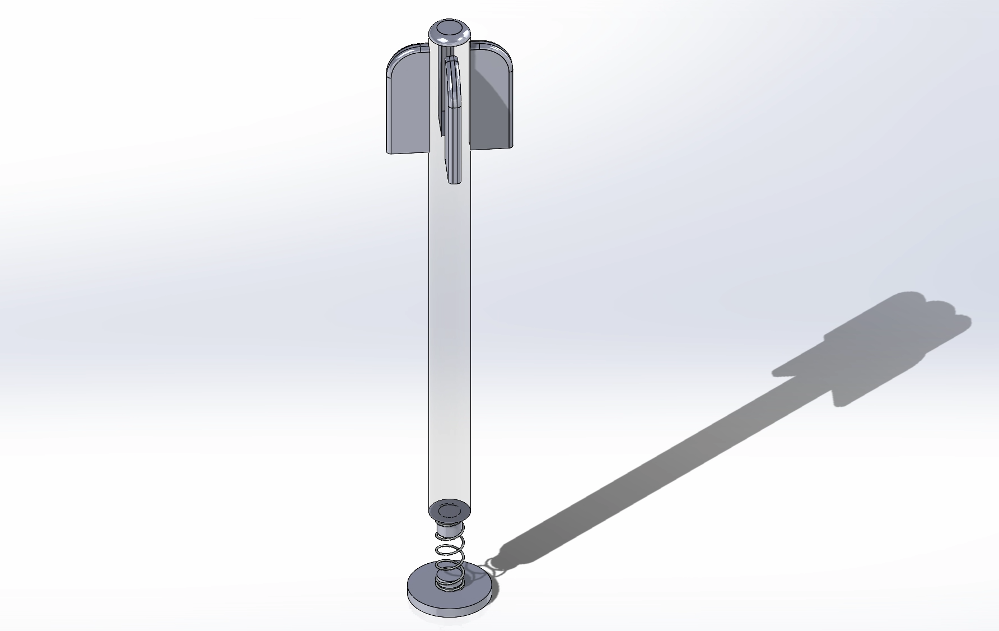

HASEL Actuator and Whisker Sensor (In progress)
HASEL (hydraulically amplified self-healing electrostatic) Actuator:
- Soft actuator that combines hydraulic amplification with electrostatic forces to achieve muscle-like performance.
- Flexible, dielectric shell filled with liquid dielectric and can self-heal.
- Ultimate goal: active hydrodynamic imaging.
- Flexible whisker with hall-effect sensor for 3-dimensional motion detection. 
Videos of two different HASEL actuators made in the lab.
Whisker Sensor (in progress):
CAD of whisker sensor currently in development.
CAD of whisker sensor currently in development.